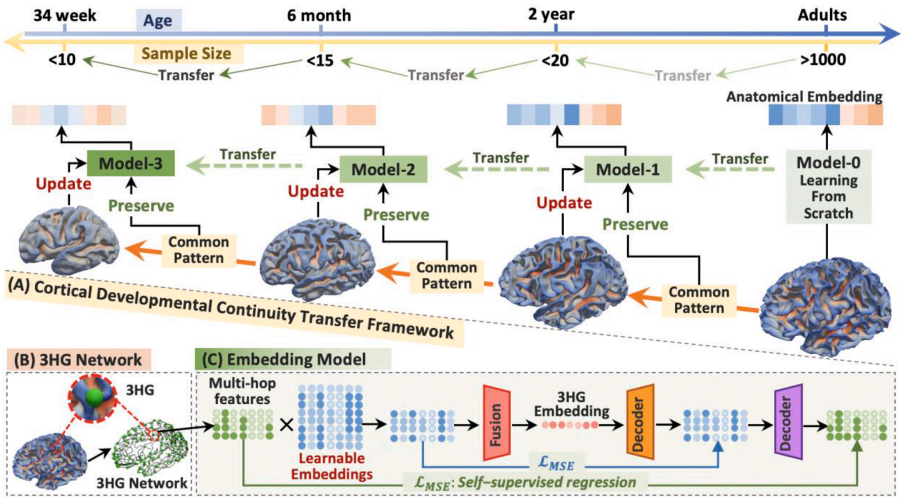
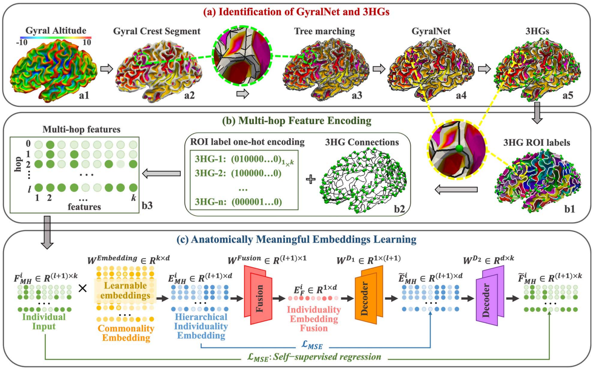
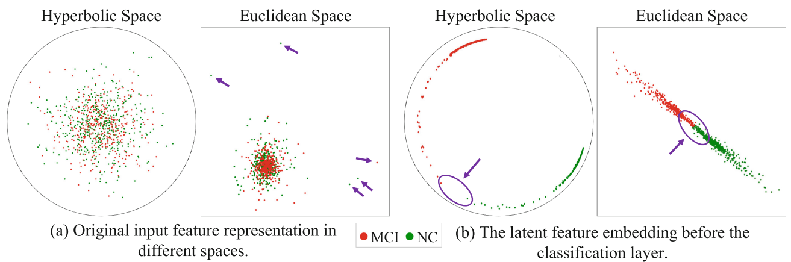
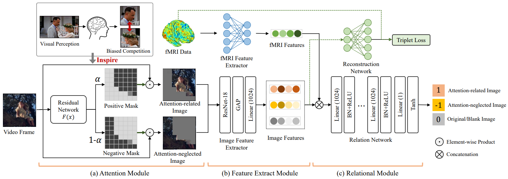
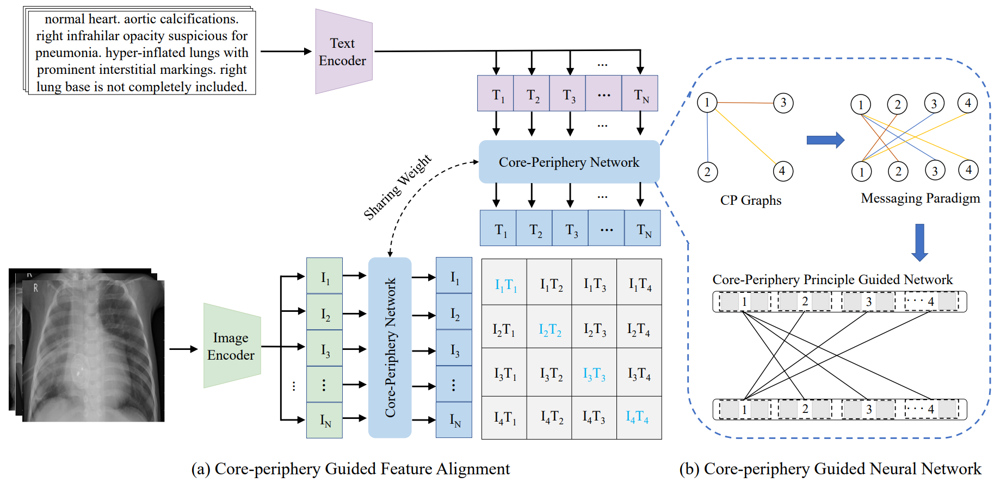
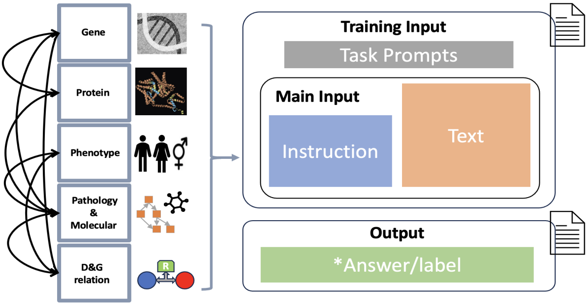

MIND Research
Brain Imaging
Learning Lifespan Brain Anatomical Correspondence via Cortical Developmental Continuity Transfer, Medical Image Analysis, 2024

Due to the variability in cortical folding, neurodevelopmental stages, and limited neuroimaging data, inferring reliable lifespan anatomical correspondences is challenging. To address this, we leverage cortical developmental continuity and propose a transfer learning strategy: training the model on the largest age group and adapting it to other groups along the cortical trajectory. Evaluated on 1,000+ brains across four age groups (34 gestational weeks to young adults), results show that this strategy significantly improves performance in populations with limited samples and robustly infers complex anatomical correspondences across stages.
Cortex2vector: anatomical embedding of cortical folding patterns, Cerebral Cortex, 2022

In this work, we put further effort, based on the identified 3HGs, to establish the correspondences of individual 3HGs. We developed a learning-based embedding framework to encode individual cortical folding patterns into a group of anatomically meaningful embedding vectors (cortex2vector). Each 3HG can be represented as a combination of these embedding vectors via a set of individual specific combining coefficients. In this way, the regularity of folding pattern is encoded into the embedding vectors, while the individual variations are preserved by the multi-hop combination coefficients.
Predicting brain structural network using functional connectivity, Medical Image Analysis, 2022

Motivated by the advances of generative adversarial network (GAN) and graph convolutional network (GCN) in the deep learning field, in this work, we proposed a multi-GCN based GAN (MGCN-GAN) to infer individual SC based on corresponding FC by automatically learning the complex associations between individual brain structural and functional networks. The generator of MGCN-GAN is composed of multiple multi-layer GCNs which are designed to model complex indirect connections in brain network. The discriminator of MGCN-GAN is a single multi-layer GCN which aims to distinguish the predicted SC from real SC. To overcome the inherent unstable behavior of GAN, we designed a new structure-preserving (SP) loss function to guide the generator to learn the intrinsic SC patterns more effectively. Using Human Connectome Project (HCP) dataset and Alzheimer’s Disease Neuroimaging Initiative (ADNI) dataset as test beds, our MGCN-GAN model can generate reliable individual SC from FC.
Brain Disease
Disease2Vec: Representing Alzheimer’s Progression via Disease Embedding Tree, Pharmacological Research, 2023

Predictive models for Alzheimer’s Disease (AD) and mild cognitive impairment (MCI) have largely focused on binary or multi-class classification, overlooking AD’s continuous progression. While recent models explore biomarker sequences, predicting individual patient status across AD’s continuous stages remains understudied. We introduce Disease2Vec, a novel embedding framework that encodes clinical stages into meaningful vectors, creating a disease embedding tree (DETree) that reflects AD progression. DETree enables accurate prediction across five clinical groups and provides richer insights by mapping patients onto a continuous trajectory of AD progression.
Deep Fusion of Brain Structure-Function in Mild Cognitive Impairment, Medical image analysis, 2021

In this work, we developed a graph-based deep neural network to simultaneously model brain structure and function in Mild Cognitive Impairment (MCI): the topology of the graph is initialized using structural network (from diffusion MRI) and iteratively updated by incorporating functional information (from functional MRI) to maximize the capability of differentiating MCI patients from elderly normal controls. This resulted in a new connectome by exploring “deep relations” between brain structure and function in MCI patients and we named it as Deep Brain Connectome. Though deep brain connectome is learned individually, it shows consistent patterns of alteration comparing to structural network at group level.
Multimodal Deep Fusion in Hyperbolic Space for Mild Cognitive Impairment Study, MICCAI, 2023

Recent studies have suggested that non-Euclidean hyperbolic space may provide a more accurate interpretation of brain connectomes than Euclidean space. In light of these findings, we propose a novel graph-based hyperbolic deep model with a learnable topology to integrate the individual structural network with functional information in hyperbolic space for the MCI/NC (normal control) classification task.
Brain-inspired AI
BI-AVAN: A Brain-Inspired Adversarial Visual Attention Network for Characterizing Human Visual Attention from Neural Activity, IEEE Transactions on Multimedia, 2024

Most visual attention studies rely on eye-tracking rather than directly measuring brain activity, and they overlook the adversarial relationship between attention-related objects and background. To address this, we propose a brain-inspired adversarial visual attention network (BI-AVAN) that models human visual attention from brain activity. Our model mimics the biased competition between attended and neglected objects to identify visual focus in movie frames, validated by independent eye-tracking data. Experimental results demonstrate that BI-AVAN effectively infers human visual attention and maps brain activity to visual stimuli.
Core-Periphery Multi-Modality Feature Alignment for Zero-Shot Medical Image Analysis, IEEE Transactions on Medical Imaging, 2024

Simply applying language-image pre-trained CLIP to medical image analysis encounters substantial domain shifts, resulting in severe performance degradation due to inherent disparities between natural (non-medical) and medical image characteristics. To address this challenge and uphold or even enhance CLIP’s zero-shot capability in medical image analysis, we develop a novel approach, Core-Periphery feature alignment for CLIP (CP-CLIP), to model medical images and corresponding clinical text jointly. To achieve this, we design an auxiliary neural network whose structure is organized by the core-periphery (CP) principle. This auxiliary CP network not only aligns medical image and text features into a unified latent space more efficiently but also ensures alignment driven by principles of brain network organization. In this way, our approach effectively mitigates and further enhances CLIP’s zero-shot performance in medical image analysis.
LLM/AGI for Healthcare
DeID-GPT: Zero-shot Medical Text De-Identification by GPT-4, 2023

The advancement of large language models (LLM), such as ChatGPT and GPT-4,
have shown great potential in processing text data in the medical domain with zero-shot in-context learning, especially in the task of privacy protection, as these models can identify confidential information by their powerful named
entity recognition (NER) capability. In this work, we developed a novel GPT4-enabled de-identification framework
(“DeID-GPT”) to automatically identify and remove the identifying information. Compared to existing commonly
used medical text data de-identification methods, our developed DeID-GPT showed the highest accuracy and remarkable reliability in masking private information from the unstructured medical text while preserving the original
structure and meaning of the text.
GP-GPT: Large Language Model for Gene-Phenotype Mapping, 2024

The complex traits and
heterogeneity of multi-sources genomics data poses significant challenges when adapting these
models to the bioinformatics and biomedical field.
To address these challenges, we present GPGPT, the first specialized large language model for genetic-phenotype knowledge representation
and genomics relation analysis. Our model is fine-tuned in two stages on a comprehensive corpus
composed of over 3,000,000 terms in genomics, proteomics, and medical genetics, derived from
multiple large-scale validated datasets and scientific publications. GP-GPT demonstrates proficiency in accurately retrieving medical genetics information and performing common genomics
analysis tasks, such as genomics information retrieval and relationship determination.